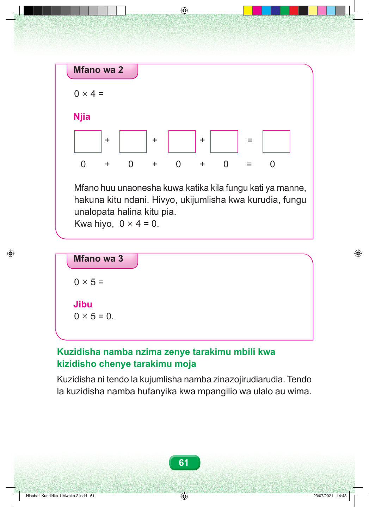

Mfano wa 2 0 × 4 = Njia + + + = 0 + 0 + 0 + 0 = 0 Mfano huu unaonesha kuwa katika kila fungu kati ya manne, hakuna kitu ndani. Hivyo, ukijumlisha kwa kurudia, fungu unalopata halina kitu pia. Kwa hiyo, 0 × 4 = 0. Mfano wa 3 0 × 5 = Jibu 0 × 5 = 0. Kuzidisha namba nzima zenye tarakimu mbili kwa kizidisho chenye tarakimu moja Kuzidisha ni tendo la kujumlisha namba zinazojirudiarudia. Tendo la kuzidisha namba hufanyika kwa mpangilio wa ulalo au wima. 61 Hisabati Kundirika 1 Mwaka 2.indd 61 23/07/2021 14:43